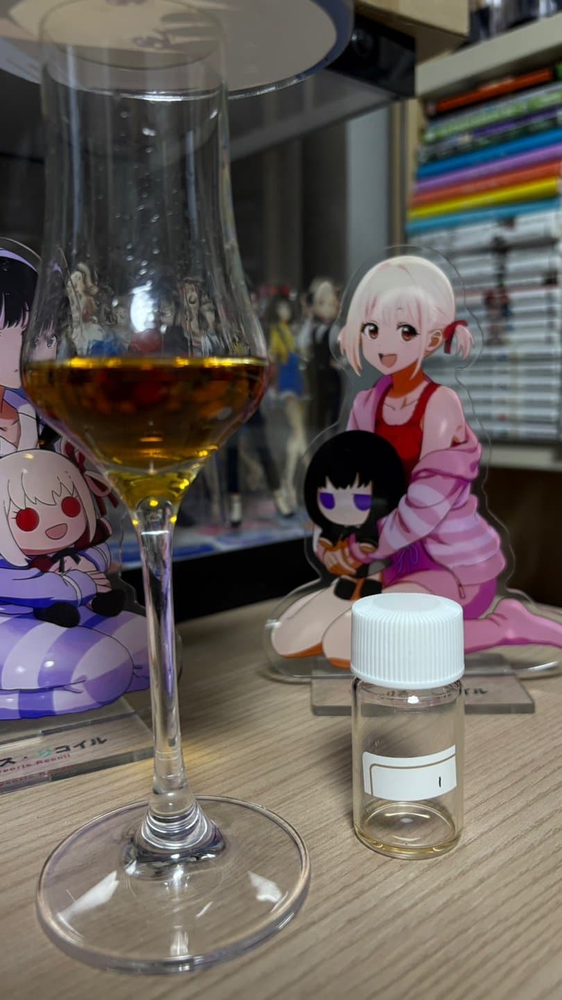

도수:
캐스크:
노즈
건포도 , 적사과 , 민트 , 꽃
건포도의 눅진한 향과 약간의 적사과 같은 향이 같이 섞어있다.
근데 민티함이 두드러지는건 뭐때문일까
팔레트
민트!!!!!!, 건포도,정향,오키함(탄닌이랑 섞인듯)
처음 들어오자 마자 민트향이 빡친다.
그외에는 셰리에서 느낄수 있는 특유의 느낌이 매우 느껴진다.
피니쉬
탄닌감,살짝 민티함
민티함이 노즈부터 피니쉬까지 도드려지게 나타난다..
좀 묵직한게 하이랜드 느낌이 든다.
캐스크는 셰리계열 퍼필 오로로소 같다. 와인캐랑 살짝 햇갈렸는데 와인캐보단 올로로소 같음
고숙은 아니다. 7~10년 전후?
이걸 맞추면 내가 어디 디스틸러 자리 노리고 있겠지 ㄷㄷ